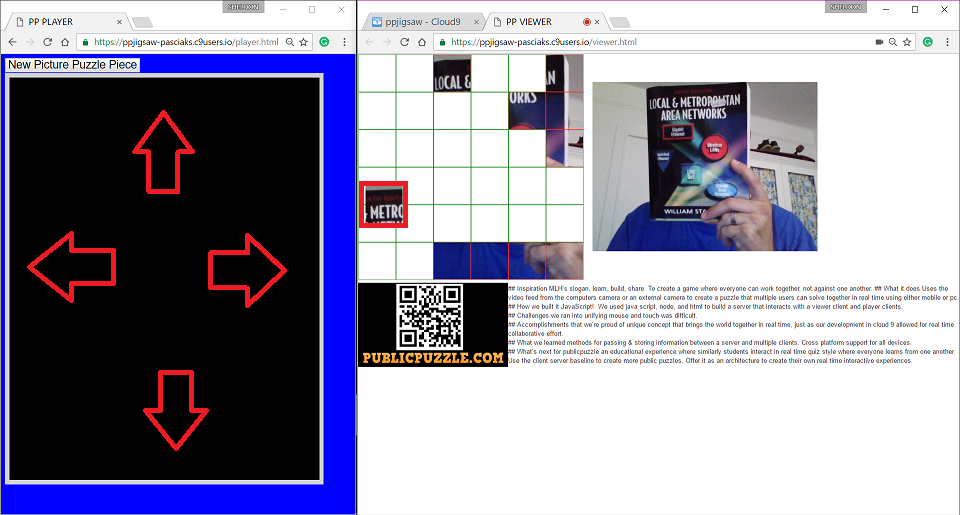

 In summary, we've created a unique interactive game that uses an overhead projected view to engage any public audience.
It allows them to interact through the internet using smart phones or tablets to play with each other in a customized and unique jigsaw puzzle game.
We believe this unique socialization idea has potential to be a game changer in public settings.
We will continue to develop additional concepts and are eager to work with your team to develop anything desired. This idea for an interactive mobile experience provides the reason for a group to pay attention to an overhead display and entertains them with game play and socialization. In addition to views of the game, a short advertisement screen is implemented and can be configured to provide relevant information to the public. The unique game theory implemented demonstrates the potential to interactively engage any audience in real time.
Although we would expect use of public puzzle and similiar products at locations like libraries and lobbies of schools, the use of this technology is not limited to them. We desire to work with a marketing business and their software developers in order to centralize this idea and implement it where and how desired.
As current students pursuing our Bachelor's degree at Daytona State College we are eager to demonstrate the idea and work with any company in order to put this unique idea to use.
We are available at almost anytime to discuss any suggestions you may have. Please contact us at your convenience.